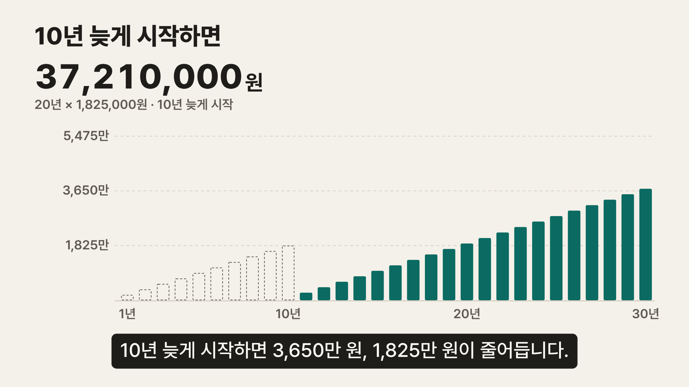
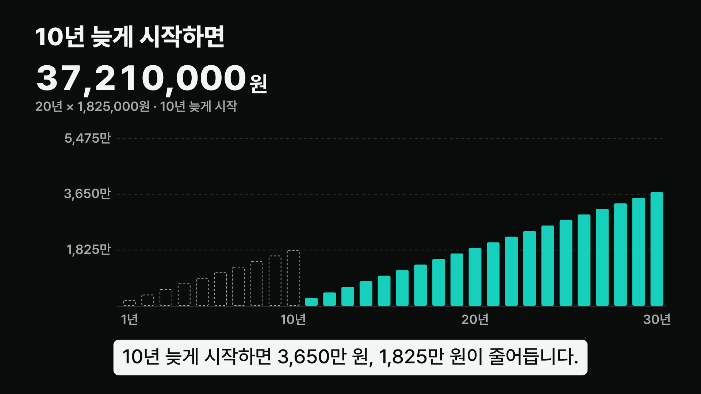
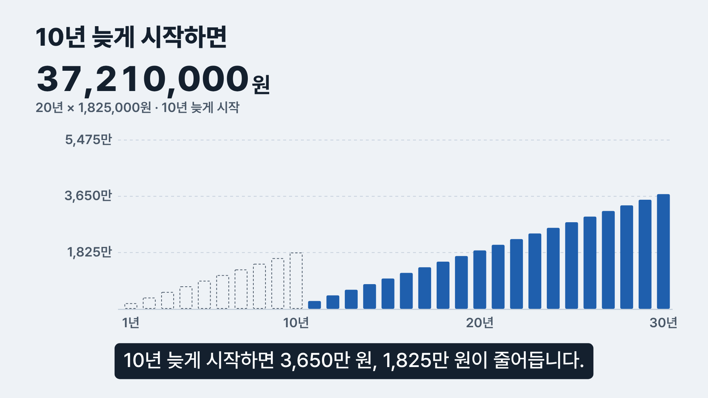

커피값 30년 — 디자인 방향 3안
같은 장면(반전 파트, 24.6초: 10년 늦게 시작해 막대 열 개가 비고 합계가 줄어드는 순간)을 세 가지 토큰으로 그렸습니다. 레이아웃·움직임·문구는 같고, 색과 바탕만 다릅니다.

따뜻한 종이색 바탕, 청록 한 색. 가계부·영수증처럼 생활의 돈 이야기로 읽히고, 모든 글자 대비가 5:1 이상입니다.

저장소의 Teal Noir 룩. 검은 바탕에 밝은 막대가 "투자 수익" 광고처럼 보여, 이자 없는 단순 합계라는 정직한 톤과 어긋납니다.

금융 리포트 같은 차가운 톤. 숫자는 또렷하지만 사회초년생의 일상(커피 한 잔)과 거리가 멀고, 브랜드 청록과도 이어지지 않습니다.
결정 기록
| 질문 | 답 |
|---|---|
| 누구를 위한가 | 커피값 5,000원은 푼돈이라 모아 봤자 별것 없다고 믿는 사회초년생. |
| 무엇을 전하나 | 5,000원이 30년 동안 10,950번 반복되면 5,475만 원이 된다. |
| 이름이 필요한가 | 아니요. "하루 = 한 칸"이라는 단위 하나면 충분해서 새 용어를 만들지 않았습니다. 축 라벨과 자막은 모두 원·만 원·년·일처럼 이미 아는 말만 씁니다. |
| 왜 A인가 | 바탕이 조용해서 움직이는 한 가지(채워지는 칸, 올라가는 막대, 줄어드는 합계)에 시선이 갑니다. 청록은 저장소 브랜드 색을 어둡게 내려 대비를 맞췄습니다. |
| 뺀 것 | 동전·지폐 일러스트, 돼지 저금통, 이자·수익률 숫자, 글로우, 파티클. 출처 없는 숫자와 장식은 모두 뺐습니다. |